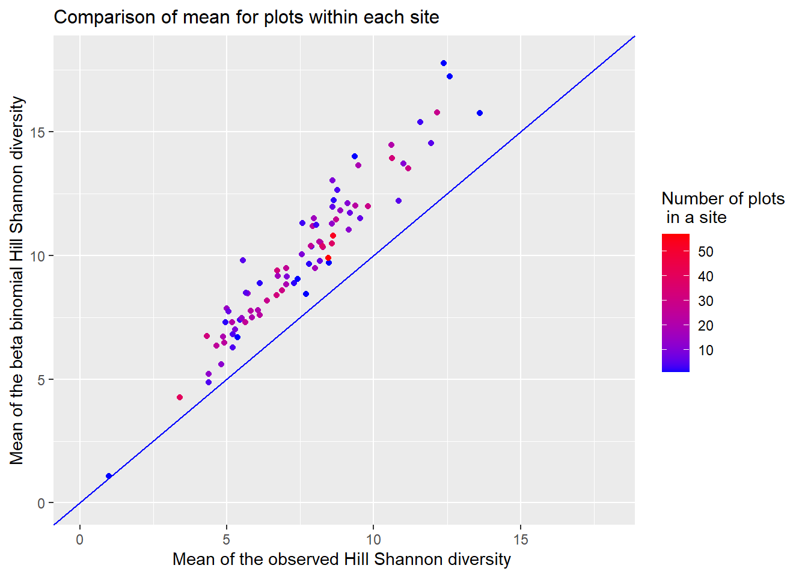
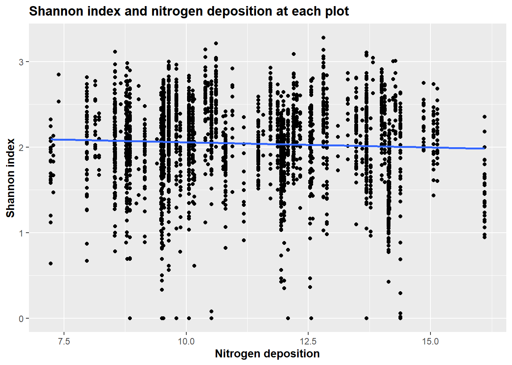
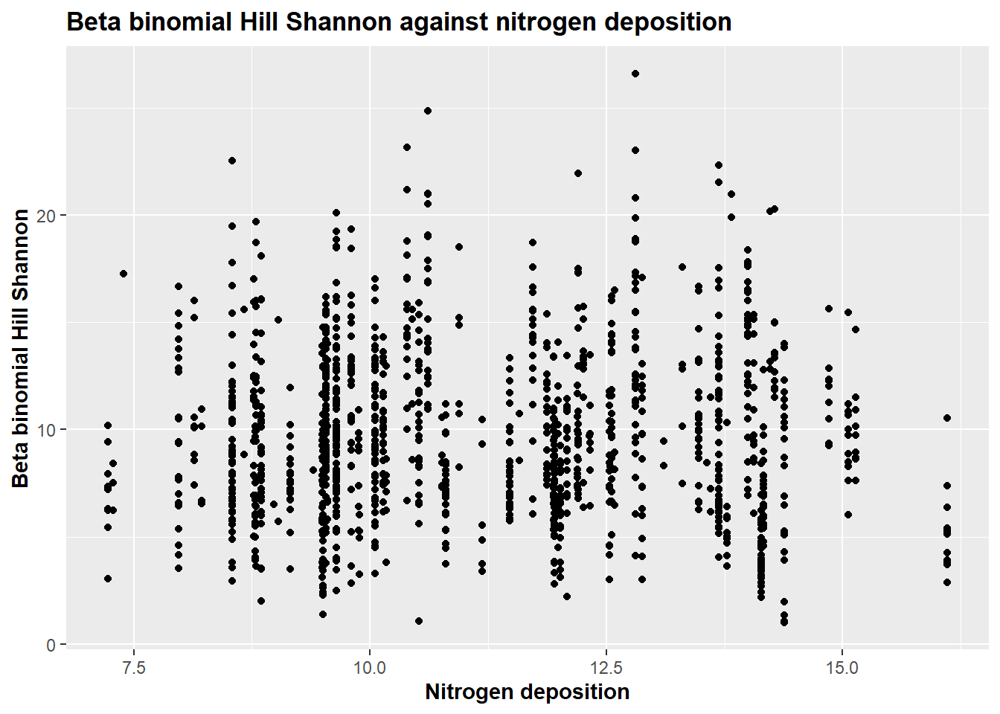

Examples of applications of the Bayesian model
This page includes a comparison between diversity measures computed using the observed cover data and the beta binomial cover data. Furthermore, it includes two examples of applications of the beta binomial cover update function presented at Bayesian model. The page should, hopefully, give the reader a further feeling of how the beta binomial cover update function works as well as give inspiration to what cases the function can be used for.
The Comparison section will use data for the tertiary habitat “Nardus grasslands” to study the effect of the beta binomial cover update function on the data viewed through different diversity measures. This will be done at a plot level. We will, furthermore, use the tertiary habitat “Dry calcareous grasslands” to also look at the effect of the beta binomial cover update function at site level. The comparisons will primarily be done by visual inspections.
The Species diversity and pH value section works with the tertiary habitat “Nardus grasslands”. This example will include a small study of the relation between pH value of the soil and species diversity calculated using either the observed cover data or the beta binomial cover data.
The Species diversity and nitrogen deposition section works with the tertiary habitat “Dry calcareous grasslands”. This tertiary habitat is included to study the effect of nitrogen deposition on species diversity in an area.
You can read more about what kind of data that is used at Introduction.
Examples
Comparing diversity measures
In this section we will only work with a subset of the NOVANA data including the tertiary habitat “Nardus grasslands” (in the NOVANA dataset this is encoded as terhabtype = 6230). Furthermore, we only look at year 2014. Further details on how this subset was created, can be found at data 6230. We will refer to the presence/absence data as “freq” throughout this section.
cover <- read.csv("data/cover_data_6230_year2014.csv")
freq <- read.csv("data/frekvens_data_6230_year2014.csv")
abiotiske <- read.csv("data/abiotiske_data_6230_year2014.csv")We apply the beta_binomial_cover_update function to the cover and freq datasets and obtain a dataset with updated cover values for each species in each plot. In the following we will refer to this as the beta binomial cover data.
beta_binomial_cover <- beta_binomial_cover_update(cover, freq, n = 16, 3)If the reader wants to get a further look at how the function works on this type of data the reader can go to Bayesian model.
Species level
The following plot is included as an example of a prior distribution used in the beta binomial cover update method. The plot is the prior distribution for the species “Agrostis capillaris” also know as the common bent.

The above plot was built as follows: for each plot where the species “Agrostis capillaris” had a \(1\) in the presence/absence data we saved the number of pins the species was hit by in the cover data and divided these by 16 to get the relative cover. We then fitted a beta distribution to these numbers and thereby obtained the plot.
This plot illustrates what a spatially aggregated distribution can look like. It is seen that there is a high probability of being either around 0 or around 1. This is not only for this species but a common beta prior distribution for many species. This is because a lot of species are grouped in a way, such that if they are present, they will cover a lot of the area, or else they are not present at all.
Hill Diversity comparison
In this section we will use the Hill diversity that is described on Diversity to compare the beta binomial cover data with the observed cover data from the “Nardus grasslands” habitat. This will highlight how using the beta binomial cover update method will change the result, depending on how much emphasize rare species are given when calculating the diversity for a plot.
Hill diversity is given as
\[ \text{Hill diversity = }\left( \sum_{i=1}^{S} p_i (r_i)^{l}\right)^{1/l} \]
where the \(l\) exponent determines how much we emphasizes rare species. For high \(l\) values the Hill diversity is more sensitive to rare species. For \(l = -1\) we have the Hill Simpson diversity, for \(l = 0\) we have the Hill Shannon diversity and for \(l = 1\) we have the Species richness. Below we look at some plots in the dataset. We see how the diversity of the plot changes as a function of the exponent \(l\). We do this for the plot in the observed cover dataset (red line) and for the same plot in the beta binomial cover data (blue line). This can help to give a feeling of when the beta binomial cover update method has the biggest impact on the computed diversity measures.
For plot 1:
different_diversities(cover, beta_binomial_cover, plot = 1, remove_column = 3)
For plot 100:
different_diversities(cover, beta_binomial_cover, plot = 100, remove_column = 3)
It should be noted that in practice we would not calculate the Species richness for a plot with the observed cover data but rather with the presence/absence data. If we did calculate the Species richness from the observed cover data, we would only get the Species richness of the small square in the center of the plot and not of the entire plot. In the above plot we want to show how the observed cover data and the beta binomial cover data compare. Therefore, we have calculated the Species richness from the observed cover data (Species richness is \(l\) = 1). Of this reason, one should probably be careful and not interpret too much on the diversity estimates for large values of \(l\) for the observed cover data as these diversity estimates are not comparable with the ones we get from the beta binomial cover data.
In both the observed cover data and the beta binomial cover data the diversity estimates increase as \(l\) increases. However, the diversity estimate for the beta binomial cover data increases at a much more rapid pace. This can be contributed to the fact that as \(l\) increases the diversity estimate gets more sensitive towards rare species, and thereby favor rare species more.
All the species that have a \(0\) in the observed cover data will be assigned a small abundance value in the beta binomial cover data if they have a “1” in the present/absence data, implying that these species are rare in this dataset. Thus, the beta binomial cover data will have a lot more rare species than the observed cover data and it, therefore, makes sense that as \(l\) increases, the difference in diversity estimates from the beta binomial cover data and the observed cover data increases.
Instead of only looking at a single plot at a time, we plot the average curve for all plots in the “Nardus grasslands” dataset. The shaded area around the curve visualize the standard deviation. We do it for all plots in the observed cover data (blue line) and all plots in the beta binomial cover data.

Many of the same comments as before also apply to this plot. We note the standard deviation stays roughly the same and only gets bigger for values of \(l\) close to 1. However, as stated earlier we would not use cover data to estimate Species richness but presence/absence data so we are not too worried about the increased deviation in this part of the plot.
Different diversity estimates compared
This subsection is intended to further study what the effect of the beta binomial cover update function is on the data. For a number of different diversity measures we will plot the diversity measure obtained from the beta binomial cover data against the diversity measure obtained from the observed cover data. This is meant to further visualize the effect of the beta binomial cover update function.
All the used diversity estimates are defined at Diversity. When the Shannon index, Hill Shannon and Hill Simpson are calculated using the beta binomial cover dataset they will be referred to as “beta binomial Shannon index”, “beta binomial Hill Shannon” and “beta binomial Hill Simpson” respectively.
Below we have calculated the Shannon index for each plot using the observed cover dataset and the beta binomial cover dataset respectively. We have plotted these against each other.
observed_shannon <- shannon(cover, 3)beta_binomial_shannon <- shannon(beta_binomial_cover, 3)
It can be seen in this example that the beta binomial Shannon indexes give a slightly higher value for all plots. Noticeably are the biggest difference among plots with a low Shannon index.
As stated earlier many species grow in clumps, so for the plots with a low Shannon index, is it not unlikely that the small square is placed on a few species, hence do not cover the species that is growing in the plot but outside of the square. Therefore they are not accounted for in the cover data, but do get assigned a small value in the beta binomial cover data. When this is the case, it makes sense that the Shannon index changes a lot, because all of the species not present in the small square, is now taken into account.
We make a similar plot with the Hill Shannon diversity.
observed_hill_shannon <- hill_shannon(cover, 3)beta_binomial_hill_shannon <- hill_shannon(beta_binomial_cover, 3)
Here can it be seen that the difference seems to be largest with the higher value of the Hill Shannon.
Another method to estimate species diversity is to use the Hill Simpson diversity. We create a similar plot as above.
observed_hill_simpson <- hill_simpson(cover, 3)beta_binomial_simpson <- hill_simpson(beta_binomial_cover, 3)
The difference between the beta binomial Hill Simpson diversity and the Hill Simpson diversity obtained from the observed cover data is less than when we applied the Hill Simpson estimate. This fits nicely with what we found in the “Hill Diversity comparison” subsection. It is worth to notice that we in this plot get some diversity estimates that are lower in the beta binomial cover data than in the observed cover data.
We investigate this last point a bit further, i.e. we want to study why some plots obtain a lower Hill Simpson estimate after the application of the beta binomial cover update function. To do this we compare the point furthest above and furthest below the line \(y = x\). These points are colored purple in the plot above. We will refer to the plot corresponding to the point furthest below the line as the “low plot” and the plot corresponding to the point furthest above the line as “high plot”.
We first look at the “low plot”. In the table below each column corresponds to the normalized cover of a species in the plot. All species with a \(1\) in the presence/absence data for the plot are included. We are interested in the normalized cover for each species as we use these when calculating the diversity measure. Additionally, we can use this information to see which species are rare and which are common in the plot. We have calculated the normalized cover for a species as the cover of the species divided by the total cover for all species in the plot.
We decided not to include the name of each present species as column names to keep the table as simple as possible. Additionally, the reason is that we are not interested in some specific species but rather at the effect of the beta binomial cover update function on a plot level.
Normalized cover for species in “low plot”
| Observed cover: | 0.0267 | 0.16 | 0 | 0.08 | 0 | 0.0533 | 0 | 0.04 | 0.04 | 0.0267 | 0.12 | 0.0667 | 0 | 0.0133 | 0.0133 | 0.04 | 0 | 0 | 0.0533 | 0.04 | 0.04 | 0.04 | 0.0267 | 0 | 0.12 |
| Beta binomial cover: | 0.0281 | 0.171 | 0.0027 | 0.0775 | 4e-04 | 0.0403 | 0.0018 | 0.0409 | 0.0338 | 0.0324 | 0.1172 | 0.0652 | 0.0021 | 0.0153 | 0.0146 | 0.0396 | 0.0027 | 0.001 | 0.0449 | 0.0336 | 0.0372 | 0.0404 | 0.0262 | 0.0011 | 0.1299 |
First we note that there are very few species in the plot that was not already spotted in the observed cover data. Secondly, the normalized cover does not change very much after the application of the beta binomial cover update function. Some of the common species from the observed cover data (the ones with high normalized cover) have gotten slightly higher normalized cover while the species with either zero or a small cover in the observed cover data have also only changed a bit.
The Hill Simpson measure will be dominated by the common species, so when we apply this estimate the change in the normalized cover for the common species will have a bigger impact on the diversity estimate than the change in the cover of the rare species. Ultimately, we get a lower diversity estimate for this plot after the application of the beta binomial cover update function when we use the Hill Simpson diversity.
The Hill Shannon diversity estimate will favor neither rare or common species. Thus, had we instead applied the Hill Shannon on the plot we would get a higher Hill Shannon diversity from the beta binomial cover data than from the observed cover data. The reason being the the Hill Shannon will take the change in the cover of the rare species more into account than the Hill Simpson diversity. Especially, the Hill Shannon would be better to include the small change in the normalized cover for those species that were not spotted in the observed cover data.
Next we look at the “high plot”, i.e. the plot corresponding to the point furthest above the line. This is included to show when the beta binomial cover update function has a big impact on the diversity measure of a plot. We have created a similar table as the one above for this plot.
Normalized cover for species in “high plot”
| Observed cover: | 0 | 0.0455 | 0.1364 | 0 | 0 | 0 | 0 | 0 | 0 | 0 | 0 | 0.0455 | 0.0455 | 0 | 0.0455 | 0 | 0 | 0 | 0.0909 | 0.1818 | 0 | 0 | 0.0455 | 0 | 0 | 0 | 0 | 0 | 0 | 0 | 0 | 0 | 0 | 0.0455 | 0.1364 | 0 | 0 | 0 | 0.0455 | 0 | 0 | 0 | 0.0455 | 0.0909 |
| Beta binomial cover: | 0.0083 | 0.0654 | 0.103 | 0.0079 | 0.0027 | 0.0031 | 0.0072 | 4e-04 | 0.0058 | 0.0029 | 7e-04 | 0.0437 | 0.0435 | 0.0017 | 0.0368 | 0.002 | 0.0075 | 0.0063 | 0.0614 | 0.1534 | 0.0051 | 0.0056 | 0.0434 | 0.0075 | 0.0095 | 0.0011 | 0.0014 | 0.0051 | 0.0043 | 0.0039 | 7e-04 | 2e-04 | 0.0026 | 0.0253 | 0.1177 | 5e-04 | 0.0079 | 0.0022 | 0.0369 | 0.0012 | 0.0062 | 0.0025 | 0.0553 | 0.09 |
We see that a lot of species were not spotted in the observed cover data (even though they have a \(1\) in the corresponding presence/absence data). They all obtain a small normalized cover in the beta binomial cover. In the observed cover data we have a few and all fairly common species. Thus, the mean rarity is low and we get a low diversity from the observed cover data of the plot. The opposite is the case in the beta binomial cover where we have a lot of species most of them rare. Thus, the mean rarity is high and the diversity of the plot is high. We will get a high diversity from the beta binomial cover data regardless of which Hill diversity we choose. Clearly we also get a higher diversity estimate from the beta binomial cover than from the observed cover when we apply the Hill Simpson diversity.
Comparisons across sites
In this section we will look at the tertiary habitat “dry calcareous grasslands” (in the NOVANA dataset this is encoded as terhabtype = 6210) from year 2009. This subset is made in the same way as the subset at data 6230.
cover_6210 <- read.csv("data/cover_data_6210_year2009.csv")
freq_6210 <- read.csv("data/frekvens_data_6210_year2009.csv")
abiotiske_6210 <- read.csv("data/abiotiske_data_6210_year2009.csv")We apply our function to the data.
beta_binomial_cover <- beta_binomial_cover_update(cover_6210, freq_6210, n = 16, remove_column = 3)Again we refer to this new dataset as the beta binomial cover data.
So far, we have just been comparing the effect of the beta binomial cover update function at plot level (a circle with 5 meter radius). Since each plot is just a sample of a larger site, it could be interesting to see the effect of the beta binomial cover update function at site level instead.
We will use the Hill Shannon diversity to measure the species diversity as this estimator does not favor neither common or rare species. We will aggregate the Hill Shannon for all the plots from the same site and take the mean and variance for each site.
We will first plot how beta binomial Hill Shannon compares with the observed Hill Shannon, where we for each site has taken the average value for all plots within that site.

This looks quite similar to what we found when we compared at plot level.
Another comparison we can make is to look at how the variance of species diversity changes for a site when we apply the beta_binomial_cover_update function and use the Hill Shannon diversity as a measure. The points are colour scaled after the number of plots within a site.

The above suggest that for the sites with a large variance in Hill Shannon diversity, the variance become larger when the beta_binomial_cover_update function is applied as opposed to the observed cover data. For sites with a low variance the change does not seem to be as big. It is worth noticing that a large part of the sites with a low variance have few plots.
Species diversity and pH value
In the this example we only work with a subset of the NOVANA data including the tertiary habitat “Nardus grasslands” (in the NOVANA dataset this is encoded as terhabtype = 6230). Furthermore, we only look at year 2014. Further details on how this subset was created, can be found at data 6230.We will refer to the presence/absence data as “freq” throughout this section.
cover <- read.csv("data/cover_data_6230_year2014.csv")
freq <- read.csv("data/frekvens_data_6230_year2014.csv")
abiotiske <- read.csv("data/abiotiske_data_6230_year2014.csv")We apply the beta_binomial_cover_update function to the cover and freq datasets and obtain a dataset with updated cover values for each species in each plot. In the following we will refer to this as the beta binomial cover data.
beta_binomial_cover <- beta_binomial_cover_update(cover, freq, n = 16, 3)If the reader wants to get a further look at how the function works on this type of data the reader can go to Bayesian model.
One of the reasons one might want to calculate the diversity for a plot or a site is to compare how different variables affect the diversity of the plot. An example of this could be that one wants to see how the pH value of the soil are related to the diversity of the plot. The pH value is associated with plants nutrient availability and lots of other stuff. Thus, we might be able to see a change in the diversity for changing pH values. The pH values are additionally of concern due to acidification from precipitation which may alter pH in the soil.
Below we have calculated the Shannon index for each plot using the observed cover dataset and the beta binomial cover dataset respectively.
observed_shannon <- shannon(cover, 3)beta_binomial_shannon <- shannon(beta_binomial_cover, 3)Below we plot the beta binomial Shannon index and the observed Shannon index against the pH value of the soil. This is intended to visualize partly if there seems to be any interesting relationship between Shannon index and pH value of the soil and also whether the use of the beta binomial cover update function changes this conclusion.

There does not seem to be any clear relationship between the Shannon index and the pH value. As we also saw in the “Different diversity estimates compared” subsection under the comparison section, the plots with low observed Shannon index get a slightly higher Shannon index when this is calculated from beta binomial cover data.
We study the relationship between species diversity and pH value of the soil a bit further. The function plot_idiversity is used to visualize how different ways of calculating diversities compare against each other when mapped against the pH values of the soil. From the left we have Species richness, Hill Shannon and Hill Simpson, thus, we get less sensitive to rare species.
plot_diversity(data_for_plot ,c("Species richness", "Beta binomial Hill Shannon", "Beta binomial Hill Simpson"), "pH", description = "The PH value of the soil for each plot")
The general trend that can be seen for all three diversities is that a low pH value is correlated with lower diversity up until a certain point. However, the relationship is clearly not strong, so one should be careful to read too much form the plot. Further analysis will be needed to understand whether or not this is a casual relationship.
Species diversity and nitrogen deposition
In the second example we look at the tertiary habitat “dry calcareous grasslands” (in the NOVANA dataset this is encoded as terhabtype = 6210) from year 2009. This subset is made in the same way as the subset at data 6230. We will refer to the presence/absence data as “freq_6210” throughout this section.
cover_6210 <- read.csv("data/cover_data_6210_year2009.csv")
freq_6210 <- read.csv("data/frekvens_data_6210_year2009.csv")
abiotiske_6210 <- read.csv("data/abiotiske_data_6210_year2009.csv")With this data we are especially interested in how the diversity changes when plotted against different values of nitrogen deposition (from atmosphere). This is especially relevant for nature areas close to farm lands. It is assumed that if the value of nitrogen deposition is high, there is a lot of nitrogen in the soil. Increased nitrogen alters competition and is often associated with species loss (due to increasing dominance of few competitively strong plant species).
Therefore, some illustrations of the relationship between nitrogen deposition and diversity measures can be used as another example of where the beta binomial cover update function can be used.
We apply our function to the data.
beta_binomial_cover <- beta_binomial_cover_update(cover_6210, freq_6210, n = 16, remove_column = 3)Again we refer to this new dataset as the beta binomial cover data.
Again we start with the Shannon index as this is so often used to estimate species diversity. We plot the observed Shannon index and the beta binomial Shannon index against the nitrogen deposition.
observed_shannon <- shannon(cover_6210, 3)
<ggproto object: Class FacetWrap, Facet, gg>
compute_layout: function
draw_back: function
draw_front: function
draw_labels: function
draw_panels: function
finish_data: function
init_scales: function
map_data: function
params: list
setup_data: function
setup_params: function
shrink: TRUE
train_scales: function
vars: function
super: <ggproto object: Class FacetWrap, Facet, gg>As it can be seen here is there not a big difference between the two plots. It should however be noticed that the beta binomial Shannon index is slightly higher for all values of nitrogen deposition. It might also be important for an analysis to notice that fewer plots have a Shannon index at 0 for the beta binomial model. Both plots show a slight downwards trend indicating that higher nitrogen deposition might lead to lower diversity as expected. However, one should not read too much into it, since there is a high variation of Shannon index values around each value of nitrogen deposition.
The plots below illustrate how some other diversity measures applied to the beta binomial cover data looks like when mapped against the nitrogen deposition.


There does not seem to be a clear relation between the nitrogen deposition and the diversity for any of the diversity measures. Hence, even though we have used different diversity estimates, the conclusion has not changed.
sessionInfo()R version 4.0.3 (2020-10-10)
Platform: x86_64-w64-mingw32/x64 (64-bit)
Running under: Windows 10 x64 (build 19042)
Matrix products: default
locale:
[1] LC_COLLATE=English_United Kingdom.1252
[2] LC_CTYPE=English_United Kingdom.1252
[3] LC_MONETARY=English_United Kingdom.1252
[4] LC_NUMERIC=C
[5] LC_TIME=English_United Kingdom.1252
attached base packages:
[1] grid stats graphics grDevices utils datasets methods
[8] base
other attached packages:
[1] fitdistrplus_1.1-3 survival_3.2-7 maps_3.3.0
[4] MASS_7.3-53 magick_2.7.1 OpenStreetMap_0.3.4
[7] kableExtra_1.3.4 forcats_0.5.0 stringr_1.4.0
[10] dplyr_1.0.2 purrr_0.3.4 readr_1.4.0
[13] tidyr_1.1.2 tibble_3.0.4 ggplot2_3.3.2
[16] tidyverse_1.3.0 workflowr_1.6.2
loaded via a namespace (and not attached):
[1] httr_1.4.2 jsonlite_1.7.1 viridisLite_0.3.0 splines_4.0.3
[5] modelr_0.1.8 assertthat_0.2.1 highr_0.8 sp_1.4-4
[9] blob_1.2.1 cellranger_1.1.0 yaml_2.2.1 pillar_1.4.6
[13] backports_1.1.10 lattice_0.20-41 glue_1.4.2 digest_0.6.25
[17] promises_1.1.1 rvest_0.3.6 colorspace_1.4-1 Matrix_1.2-18
[21] htmltools_0.5.0 httpuv_1.5.5 pkgconfig_2.0.3 broom_0.7.2
[25] raster_3.4-5 haven_2.3.1 scales_1.1.1 webshot_0.5.2
[29] svglite_2.0.0 later_1.1.0.1 git2r_0.28.0 mgcv_1.8-33
[33] farver_2.0.3 generics_0.0.2 ellipsis_0.3.1 withr_2.3.0
[37] cli_2.1.0 magrittr_1.5 crayon_1.3.4 readxl_1.3.1
[41] evaluate_0.14 ps_1.4.0 fs_1.5.0 fansi_0.4.1
[45] nlme_3.1-149 xml2_1.3.2 tools_4.0.3 hms_0.5.3
[49] lifecycle_0.2.0 munsell_0.5.0 reprex_0.3.0 compiler_4.0.3
[53] systemfonts_1.0.1 rlang_0.4.8 rstudioapi_0.11 labeling_0.4.2
[57] rmarkdown_2.4 gtable_0.3.0 codetools_0.2-16 DBI_1.1.0
[61] R6_2.4.1 lubridate_1.7.9 knitr_1.30 rgdal_1.5-23
[65] rprojroot_1.3-2 rJava_0.9-13 stringi_1.5.3 Rcpp_1.0.5
[69] vctrs_0.3.4 dbplyr_1.4.4 tidyselect_1.1.0 xfun_0.18